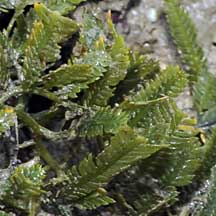
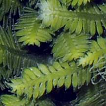
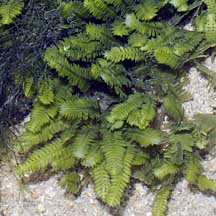
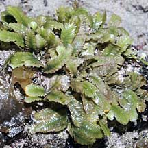
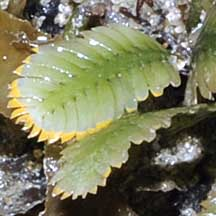

|
|
| green seaweeds text index | photo index |
| Seaweeds > Division Chlorophyta > Family Caulerpaceae > genus Caulerpa |
| Mexican
green seaweed Caulerpa mexicana* Family Caulerpaceae updated Oct 2019 Where seen? This feathery green seaweed is sometimes seen in small patches on our Southern shores. It was also called Caulerpa crassifolia. Features: A feather-like structure about 2cm long. The mid-rib or central 'stem' of the feathery structure is flat and usually with a width wider or the same as the length of the side 'branches'. The side 'branches' are short, flat and have rounded to bluntly pointed tips. These little feathery structures emerge along the length of a 'stem' that creeps over hard surfaces or just under the sand. Colours generally bright green. Its scientific name is mexicana because the seaweed was originally described from specimens from Mexico. Sometimes confused with other feathery green seaweeds or with seagrasses. Here's more on how to tell apart different feathery green seaweeds and how to tell apart feathery green seaweeds and seagrasses. |
 In small clumps on rocky areas. St John's Island, Sep 04 |
 Mid-rib width wider or the same as the length of side 'branches'. Chek Jawa, Aug 07 |
 Terumbu Berkas, Jan 10 |
 Side branches with rounded or bluntly pointed tips. |
 Terumbu Pempang Laut, Aug 10 |
*Species are difficult to positively identify without close examination of internal parts.
On this website, they are grouped by external features for convenience of display.
| Mexican green seaweeds on Singapore shores |
On wildsingapore
flickr
|
| Other sightings on Singapore shores |
 Pulau Senang, Aug 10  |
Links
|